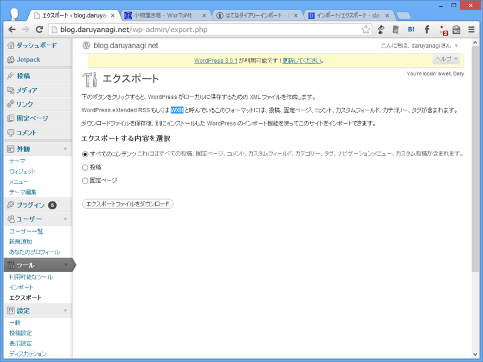
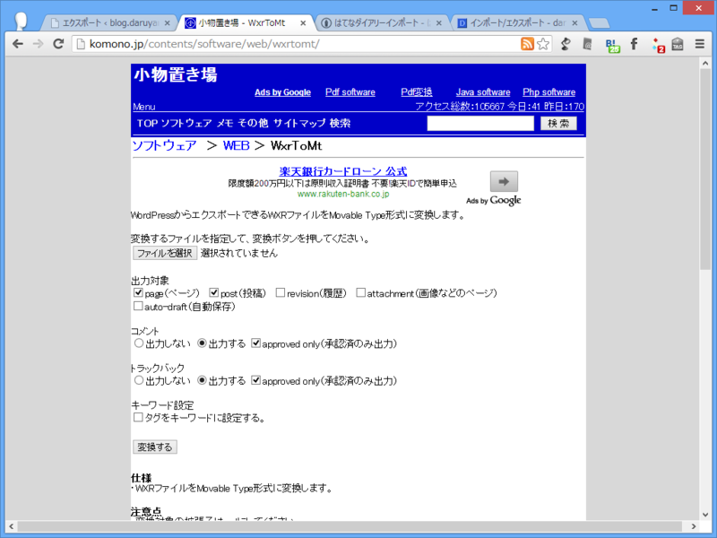
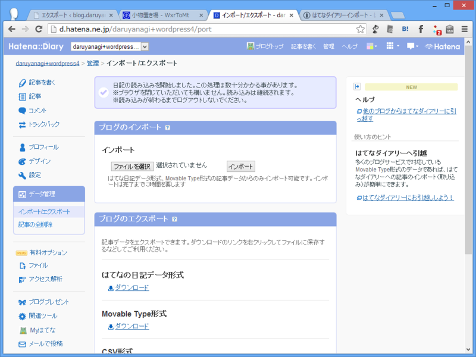
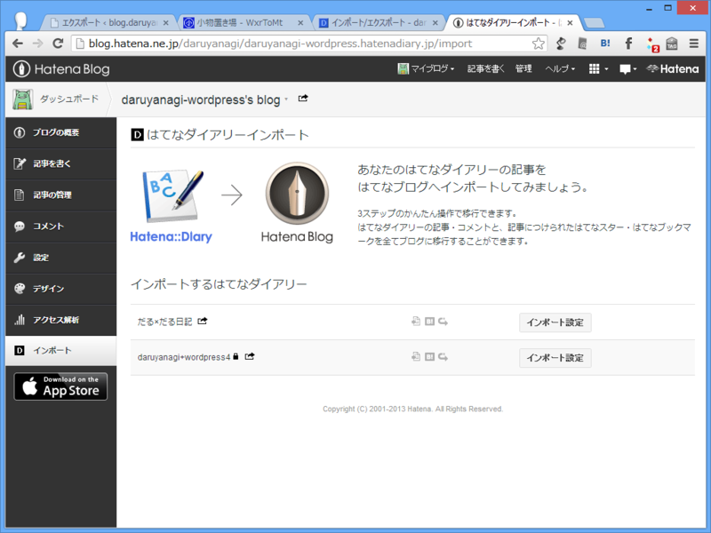

WordPress → はてなブログ
執筆日時：
今のところ、WordPress の記事を直接はてなブログへインポートする手段は用意されていないが、工夫次第ではなんとかなりそう。
たとえばこんな感じ。
- 「WordPress」のログを WXR（WordPress eXtended RSS）でエクスポート（*.xml）
- エクスポートした XML ファイルを「Movable Type」形式へコンバート（*.txt）
- 「Movable Type」形式のログを「はてなダイアリー」へインポート
- 「はてなダイアリー」の記事を「はてなブログ」へインポート
結論から言えば、これでうまくいった。
WordPress → WXR

［ツール］－［エクスポート］メニューから、記事を XML 形式で出力。
WXR → Movable Type Format

小物置き場 - WxrToMt が利用できる。
自分の場合、WordPress の記事を Markdown 記法で記述していたので、ここでテキストエディターを使ってはてな記法へ置換。ちょちょいとマクロを作って大雑把に置換し、あとは諦めるなり、修正を入れるなりして頑張った。
Movable Type Format → はてなダイアリー

はてなダイアリーで新規ダイアリーを作成し、そこへ Movable Type 形式のログをインポートする。
ここでちゃんとデータがインポートされたかをしっかりチェック。
とくに、WordPress の記事でレベルの高い見出し（h1, h2...）を使っている場合、それがダイアリーで単体の記事と扱われてしまうので注意（要するに、記事が増殖する！）。場合によってはレベルを下げる処理を行う必要がある。
はてなでは、過去に取得・放棄した URL を再び取得することはできない。つまり、インポートに失敗して、ダイアリーやブログを一旦削除すれば、その URL は二度と使えなくなる。そのため、ダイアリーの段階で入念にインポートのテストを行った方がいいと思う。
自分の場合、はてなダイアリーを4つ作るハメになった。
はてなダイアリー → はてなブログ

はてなダイアリーからはてなブログへインポートすれば作業は完了。インポート先は新規ブログでも、既存のブログでも OK。
このブログに、はてなブログのサービスが始まる前の日付で記事が追加されているのが分かるかな？